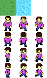
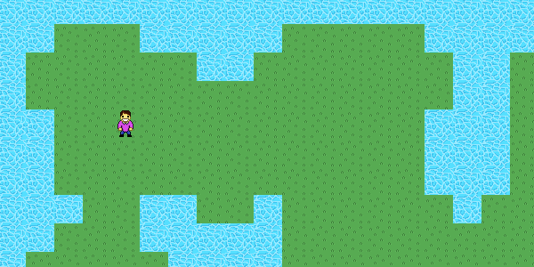

We have generated a map using a tile set. Now's the time to add a player character to our game, which will eventually be controllable using the keyboard.
Since one Tilesheet instance can only load a single tile set bitmap, when we add new tiles we need to extend the existing tile set image.
In a character's case, the tile set needs to contain animation frames of this character in different directions. In this game I'll support 4 direction movements, so I'm going to add 4 new rows of tiles to the tile set, each containing 3 movement frames.
The new tile set looks like this:
Unlike the terrain map, our player will not be static. Which means that we need to create some sort of a system that lets us control the character's position, animation and other behavior.
And it's not just the player that needs to be handled in this special way - all other entities (which are not part of the terrain) that we will add in the future are most likely going to be dynamic - this includes any collectibles, enemies, NPCs, props and so on.
Every entity like that will obviously have unique properties, animation and behavior - our player character, for instance, needs to be controlled using the keyboard and has to face the direction he's walking in.
This sounds kind of complicated, how would I actually make a system that is supposed to support all these things?
The solution is quite simple, actually.
We're going to create a class called TileEntity, which will have 1 method - draw(). This method will return the portion of the tileData array that represents this specific entity. All our entities will extend this class, and be drawn using the same common draw() method.
This elegant approach will allow us to have a specific interface for adding all entities to the draw call of the Tilesheet object, while at the same time giving us freedom to customize each entity's custom individual behavior.
If you're still confused, you'll understand the mechanism as we implement it.
Start by creating a new class TileEntity.hx, add this code:
package ;
/**
* Base class for drawable tile entities.
* @author Kirill Poletaev
*/
class TileEntity
{
public function draw():Array<Float> {
return [];
}
}Back to Main.hx class, let's declare 2 new variables - one for storing all entities, and one for our player character specifically:
private var entities:Array<TileEntity>;
private var character:PlayerCharacter;
Go to the everyFrame() function. Add the code that will loop over all entities in the array and add them one by one to the tileData array:
private function everyFrame(evt:Event):Void {
var tileData:Array<Float> = [];
// Terrain
for (row in 0...map.length) {
for (cell in 0...map[row].length) {
tileData = tileData.concat([tileSize * cell, tileSize * row, map[row][cell]]);
}
}
// Entities
for (entity in entities) {
tileData = tileData.concat(entity.draw());
}
tilesheet.drawTiles(tilesheetCanvas.graphics, tileData);
}
Go to the init() function and set the entities array to a new empty array:
// Entities
entities = new Array<TileEntity>();
We're done with the entity system.
We can now create entities that extend the TileEntity class, add them to the entities array and they will be drawn on top of the terrain tiles.
In the same init() function, create our PlayerCharacter instance. Pass the Tilesheet object as the parameter to its constructor. When the character is created, add it to the entities array.
// Player character creation
character = new PlayerCharacter(tilesheet);
entities.push(character);
We can now create our PlayerCharacter class. Here's the full code to PlayerCharacter.hx, I will explain it right away:
package ;
import openfl.display.Tilesheet;
import openfl.geom.Point;
import openfl.geom.Rectangle;
/**
* Player character's entity.
* @author Kirill Poletaev
*/
class PlayerCharacter extends TileEntity
{
private var faceDown:Array<Int>;
private var faceUp:Array<Int>;
private var faceRight:Array<Int>;
private var faceLeft:Array<Int>;
private var position:Point;
private var direction:Array<Int>;
private var step:Int;
public function new(tilesheet:Tilesheet)
{
faceDown = new Array<Int>();
faceUp = new Array<Int>();
faceRight = new Array<Int>();
faceLeft = new Array<Int>();
faceDown.push(tilesheet.addTileRect(new Rectangle(0, 32, 32, 32)));
faceDown.push(tilesheet.addTileRect(new Rectangle(32, 32, 32, 32)));
faceDown.push(tilesheet.addTileRect(new Rectangle(64, 32, 32, 32)));
faceUp.push(tilesheet.addTileRect(new Rectangle(0, 64, 32, 32)));
faceUp.push(tilesheet.addTileRect(new Rectangle(32, 64, 32, 32)));
faceUp.push(tilesheet.addTileRect(new Rectangle(64, 64, 32, 32)));
faceLeft.push(tilesheet.addTileRect(new Rectangle(0, 96, 32, 32)));
faceLeft.push(tilesheet.addTileRect(new Rectangle(32, 96, 32, 32)));
faceLeft.push(tilesheet.addTileRect(new Rectangle(64, 96, 32, 32)));
faceRight.push(tilesheet.addTileRect(new Rectangle(0, 128, 32, 32)));
faceRight.push(tilesheet.addTileRect(new Rectangle(32, 128, 32, 32)));
faceRight.push(tilesheet.addTileRect(new Rectangle(64, 128, 32, 32)));
position = new Point(128, 128);
direction = faceDown;
step = 0;
}
override public function draw():Array<Float> {
var tile:Int = direction[step];
return [position.x, position.y, tile];
}
}In the top of the class we declare 4 arrays of integer values. These arrays will hold the IDs of the tiles from Tilesheet, which represent the player character's animation frame. The arrays are populated in the constructor.
All the addTileRect() calls return an integer value, which is the ID of the tile that has just been added. All we need to do is split the tile set into character animation frames and add them to the respective arrays.
After that our faceDown array, for example, will have 3 values - the IDs of the tiles in Tilesheet that represent the 3 frames of our character walking downwards (i.e. facing downwards).
The position object simply stores the coordinates of the character. We explictly set it to (128,128) in the constructor for now.
The direction array is not actually a new array - it will always be a reference to one of the 4 existing arrays - faceDown, faceUp, faceLeft or faceRight. The reason we need it is to be able to easily change the direction that the player faces. We'll add this functionality later, but set this variable to refer to faceDown by default in the constructor.
The step value is the animation frame, set it to 0 by default. It represents the index of the animation frame in each array. Since we only have 3 frames for movement in each direction, this variable's potential values are 0, 1 and 2.
The draw() function makes use of all these values and returns an array of values that is later parsed by the draw call of the Tilesheet object. First the tile id is calculated, by accessing the required animation array using the step index. Then we create an array of 3 values - x and y coordinates, and the calculated tile id.
If everything was done correctly, if you run the game now you'll see the following picture:
Great success!
Here's full code to the Main.hx class for reference:
package ;
import flash.display.BitmapData;
import flash.display.Sprite;
import flash.events.Event;
import flash.Lib;
import openfl.Assets;
import openfl.display.Tilesheet;
import openfl.geom.Rectangle;
/**
* Tile based game.
* @author Kirill Poletaev
*/
class Main extends Sprite
{
private var inited:Bool;
private var tilesheetCanvas:Sprite;
private var tilesheet:Tilesheet;
private var map:Array<Array<Int>>;
private var tileSize:Int;
private var entities:Array<TileEntity>;
private var character:PlayerCharacter;
/* ENTRY POINT */
function resize(e)
{
if (!inited) init();
// else (resize or orientation change)
}
function init()
{
if (inited) return;
inited = true;
// Tilesheet initialization
var tilesBitmapData:BitmapData = Assets.getBitmapData("img/set.png");
tilesheetCanvas = new Sprite();
addChild(tilesheetCanvas);
tilesheet = new Tilesheet(tilesBitmapData);
tilesheet.addTileRect(new Rectangle(0, 0, 32, 32));
tilesheet.addTileRect(new Rectangle(32, 0, 32, 32));
// Entities
entities = new Array<TileEntity>();
// Player character creation
character = new PlayerCharacter(tilesheet);
entities.push(character);
// Map data
tileSize = 32;
map = new Array<Array<Int>>();
TileMap.create(map);
// Game loop
stage.addEventListener(Event.ENTER_FRAME, everyFrame);
}
private function everyFrame(evt:Event):Void {
var tileData:Array<Float> = [];
// Terrain
for (row in 0...map.length) {
for (cell in 0...map[row].length) {
tileData = tileData.concat([tileSize * cell, tileSize * row, map[row][cell]]);
}
}
// Entities
for (entity in entities) {
tileData = tileData.concat(entity.draw());
}
tilesheet.drawTiles(tilesheetCanvas.graphics, tileData);
}
/* SETUP */
public function new()
{
super();
addEventListener(Event.ADDED_TO_STAGE, added);
}
function added(e)
{
removeEventListener(Event.ADDED_TO_STAGE, added);
stage.addEventListener(Event.RESIZE, resize);
#if ios
haxe.Timer.delay(init, 100); // iOS 6
#else
init();
#end
}
public static function main()
{
// static entry point
Lib.current.stage.align = flash.display.StageAlign.TOP_LEFT;
Lib.current.stage.scaleMode = flash.display.StageScaleMode.NO_SCALE;
Lib.current.addChild(new Main());
}
}
Now we can draw a character entity and are almost ready to animate it.
Next time we'll add movement and walking animations!